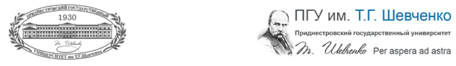
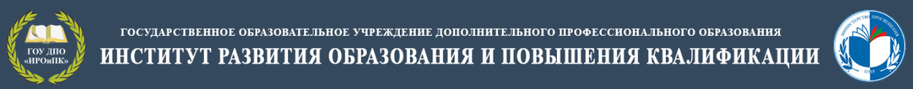
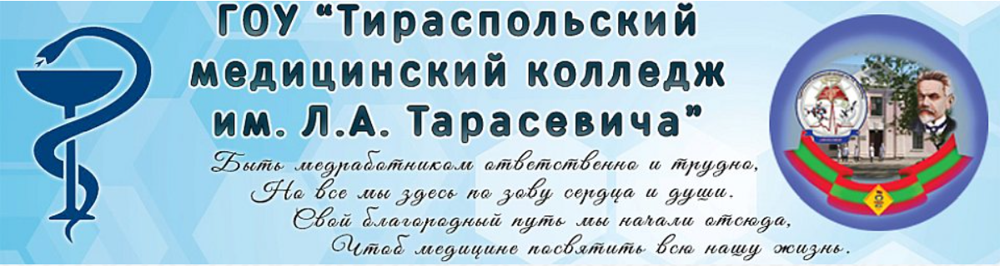

Переподготовка и повышение квалификации
Приднестровский государственный университет им. Т.Г.Шевченко
|  | ||
|---|---|---|
| Год | Программа | Количество часов |
| 2020 | Аналитическое обеспечение управленческих решений
Категория слушателей: руководители (заместители руководителей, руководители структурных подразделений, главные и ведущие специалисты) органов государственного и муниципального управления |
36 |
| 2020 | Международные отношения и международная безопасность
Категория слушателей: руководители (заместители руководителей, руководители структурных подразделений, главные и ведущие специалисты) органов государственного и муниципального управления |
36 |
| 2020 | Ключевые аспекты оценки эффективности деятельности коммерческой организации
Категория слушателей: руководители (заместители руководителей, руководители структурных подразделений, главные и ведущие специалисты) органов государственного и муниципального управления |
72 |
| 2020 | Психологическая устойчивость в профессиональной деятельности
Категория слушателей: руководители (заместители руководителей, руководители структурных подразделений, главные и ведущие специалисты) органов государственного и муниципального управления |
36 |
| 2020 | Современные подходы при осуществлении налогового администрирования
Категория слушателей: руководители (заместители руководителей, руководители структурных подразделений, главные и ведущие специалисты) органов государственного и муниципального управления |
72 |
| 2020 | Стресс-менеджмент
Категория слушателей: руководители (заместители руководителей, руководители структурных подразделений, главные и ведущие специалисты) органов государственного и муниципального управления |
36 |
| 2020 | Тайм-менеджмент
Категория слушателей: руководители (заместители руководителей, руководители структурных подразделений, главные и ведущие специалисты) органов государственного и муниципального управления |
36 |
| 2020 | Технологии управления в социальной сфере
Категория слушателей: руководители (заместители руководителей, руководители структурных подразделений, главные и ведущие специалисты) органов государственного и муниципального управления |
36 |
| 2020 | Управление конфликтами на государственной службе
Категория слушателей: руководители (заместители руководителей, руководители структурных подразделений, главные и ведущие специалисты) органов государственного и муниципального управления |
36 |
| 2020 | Управление персоналом
Категория слушателей: руководители (заместители руководителей, руководители структурных подразделений, главные и ведущие специалисты) органов государственного и муниципального управления |
36 |
| 2020 | Этика государственных служащих
Категория слушателей: руководители (заместители руководителей, руководители структурных подразделений, главные и ведущие специалисты) органов государственного и муниципального управления |
36 |
| 2019 | Английский язык
Категория слушателей: руководители (заместители руководителей, руководители структурных подразделений, главные и ведущие специалисты) органов государственного и муниципального управления |
144 |
| 2019 | Информационные технологии в государственном управлении. Электронные документы в управлении (электронное правительство)
Категория слушателей: руководители (заместители руководителей, руководители структурных подразделений, главные и ведущие специалисты) органов государственного и муниципального управления |
72 |
| 2019 | Оптимизация функционирования органов исполнительной власти и противодействие коррупции
Категория слушателей: руководители (заместители руководителей, руководители структурных подразделений, главные и ведущие специалисты) органов государственного и муниципального управления |
36 |
| 2019 | Организация предоставления государственных услуг
Категория слушателей: руководители (заместители руководителей, руководители структурных подразделений, главные и ведущие специалисты) органов государственного и муниципального управления |
36 |
| 2019 | Основы работы в Microsoft Office
Категория слушателей: руководители (заместители руководителей, руководители структурных подразделений, главные и ведущие специалисты) органов государственного и муниципального управления |
36 |
| 2019 | Правовое регулирование государственного и муниципального управления
Категория слушателей: руководители (заместители руководителей, руководители структурных подразделений, главные и ведущие специалисты) органов государственного и муниципального управления |
72 |
| 2019 | Специфика деятельности пресс-службы и работы с общественностью
Категория слушателей: руководители (заместители руководителей, руководители структурных подразделений, главные и ведущие специалисты) органов государственного и муниципального управления |
36 |
| 2019 | Этика служебного поведения и делового общения государственного служащего. Психология управления и общения. Основы конфликтологии
Категория слушателей: руководители (заместители руководителей, руководители структурных подразделений, главные и ведущие специалисты) органов государственного и муниципального управления |
72 |
Образовательный центр "Развитие"
| Год | Программа | Количество часов |
|---|---|---|
| 2020 | Программное сопровождение внеучебной воспитательной работы в начальной школе в контексте реализации новых образовательных стандартов ПМР
Основная цель– получение практических навыков при реализации вариативных программ в начальной школе. |
40 |
| 2020 | Воспитание творческой направленности личности ребенка с нарушением интеллекта в условиях коллективной деятельности
Категория слушателей: руководители (заместители руководителей, руководители структурных подразделений, главные и ведущие специалисты) органов государственного и муниципального управления |
40 |
| 2020 | Ключевые аспекты оценки эффективности деятельности коммерческой организации
Материалы семинара направлены на демонстрацию системы основных методик по выявлению уровня сформированности ключевых компетенций у учащихся |
16 |
| 2020 | Способы развития восприятия художественного образа на современном учебном занятии по предметам гуманитарно-эстетического цикла. Моделирование современного учебного занятия по литературе
Цель семинара:продемонстрировать способы создания на уроках предметов гуманитарно-эстетического цикла творческой образовательной среды, способствующей достижению личностных и метапредметных результатов обучения. |
40 |
| 2020 | Режиссура современного урока
Цель семинара: систематизация методических подходов к проектированию эффективного урока литературы, сравнение традиционного и современного уроков. |
16 |
| 2020 | Использование возможностей электронного учебника на уроках родного языка и литературы для организации образовательного процесса
Семинарпродемонстрирует широкое использование возможностей электронного дистанционного обучения в рамках традиционного урока, а также познакомит педагогов с основными этапами создания электронного учебника как дополнительного инструмента в руках учителя |
40 |
| 2020 | Адресная работа на уроках родного языка и литературы с одаренными детьми и классом в целом как продуктивное сотрудничество и проявление творческих способностей обучающихся
Цель семинара:систематизация методических подходов в работе с одаренными детьми. Семинар-практикум с использованием групповой формы работы предоставит возможность познакомиться с основными приемами работы с одаренными детьми, а также с банком олимпиадных заданий по литературе разного уровня сложности |
16 |
| 2020 | Моделирование современного учебного занятия по родному языку и литературе средствами интерактивных технологий
Цель семинара: использование современных интерактивных технологий в преподавании как средство повышения мотивации и качества образования. |
40 |
| 2020 | Система оценивания достижения планируемых результатов младших школьников в условиях реализации требований ГОС НОО
Учителя начальных классов получат разработанные планы-конспекты центральных тем модуля «Основы православной культуры», а также модуля «Основы светской этики». Рассматривая педагогические условия введения и преподавания курса ОРКСЭ, на семинаре подробно будет освещен вопрос об особенностях оценивания образовательных достижений учащихся в ходе изучения курса. |
40 |
| 2020 | Формирование универсальных учебных действий на уроках ИЗО
Роль учебного предмета «Изобразительное искусство»в формировании универсальных учебных действий через организацию совместной учебной деятельности, использование проектных, игровых, поисковых, диалоговых методов активизирующих учебно-познавательную деятельность учащихся. |
40 |
Институт развития образования и повышения квалификации
|  | ||
|---|---|---|
| Кафедра | Программа | Цель курсовой подготовки |
| Кафедра дошкольного и начального образования | Дошкольное образование
Содействие повышению качества дошкольного и начального образования в республике, углубление знаний слушателей по различным аспектам воспитания и обучения в ОДО и начальной школе, повышение уровня профессиональной компетенции специалистов системы просвещения. |
углубление знаний слушателей по курируемым направлениям в образовательных организациях ПМР. |
| Кафедра дошкольного и начального образования | Начальное образование
Содействие повышению качества дошкольного и начального образования в республике, углубление знаний слушателей по различным аспектам воспитания и обучения в ОДО и начальной школе, повышение уровня профессиональной компетенции специалистов системы просвещения. |
углубление знаний слушателей по курируемым направлениям в образовательных организациях ПМР. |
| Кафедра общеобразовательных дисциплин и дополнительного образования | Родной (русский) язык и литература | углубление знаний слушателей по курируемым направлениям в образовательных организациях ПМР. |
| Кафедра общеобразовательных дисциплин и дополнительного образования | Родной (молдавский) язык и литература | углубление знаний слушателей по курируемым направлениям в образовательных организациях ПМР. |
| Кафедра общеобразовательных дисциплин и дополнительного образования | Родной (украинский) язык и литература | углубление знаний слушателей по курируемым направлениям в образовательных организациях ПМР. |
| Кафедра общеобразовательных дисциплин и дополнительного образования | Иностранный язык | углубление знаний слушателей по курируемым направлениям в образовательных организациях ПМР. |
| Кафедра общеобразовательных дисциплин и дополнительного образования | Официальный (русский) язык и литература | углубление знаний слушателей по курируемым направлениям в образовательных организациях ПМР. |
| Кафедра общеобразовательных дисциплин и дополнительного образования | Официальный (молдавский) язык и литература | углубление знаний слушателей по курируемым направлениям в образовательных организациях ПМР. |
| Кафедра общеобразовательных дисциплин и дополнительного образования | Официальный (украинский) язык и литература | углубление знаний слушателей по курируемым направлениям в образовательных организациях ПМР. |
| Кафедра общеобразовательных дисциплин и дополнительного образования | История и обществознание | углубление знаний слушателей по курируемым направлениям в образовательных организациях ПМР. |
| Кафедра педагогического менеджмента и психологии | Руководители организаций общего образования | углубление знаний слушателей по курируемым направлениям в образовательных организациях ПМР. |
| Кафедра педагогического менеджмента и психологии | Педагоги-психологи, социальные педагоги | углубление знаний слушателей по курируемым направлениям в образовательных организациях ПМР. |
| Кафедра педагогического менеджмента и психологии | Педагоги специального (коррекционных) организаций образования | углубление знаний слушателей по курируемым направлениям в образовательных организациях ПМР. |
| Кафедра педагогического менеджмента и психологии | Заместители руководителя по воспитательной работе, педагоги-организаторы, организаторы-досуга | углубление знаний слушателей по курируемым направлениям в образовательных организациях ПМР. |
ГОУ СПО "ТМК им. Л.А.Тарасевича"
|  | ||
|---|---|---|
| № п/п | Наименование курса | Категория слушателей |
| 1. | Сестринское дело в хирургии №1 | М/с хирургических отделений и кабинетов (Тирасполь, Бендеры) |
| 2. | Сестринское дело в терапии | М/с терапевтических отделений и кабинетов |
| 3. | Анестезиология и реанимация | М/с отделений анестезиологии и реанимации |
| 4. | Организация сестринского дела | Главные м/с ЛПУ и старшие м/с отделений |
| 5. | Скорая и неотложная помощь | Фельдшера СМП г.Тирасполь |
| 6. | Сестринское дело в педиатрии | Медсестры детских отделений |
| 7. | Акушерское дело | Акушерки роддомов и медсестры ЖК |
| 8. | Операционное дело | Медсестры операционных отделений |
| 9. | Скорая и неотложная помощь | Фельдшера СМП |
| 10. | Физиотерапия | Медсестры физиотерапевтичексих отд. |
| 11. | Сестринское дело в педиатрии | М/с поликлиник, школ, садиков |
| 12. | Эпидемиология. Гигиена и санитария | Фельдшера и лаборанты |
| 13. | Сестринское дело при инфекциях | Медсестры инфекционных отелений |
| 14. | Сестринское дело в хирургии №2 | М/с хирургических отделений и кабинетов |
Тираспольский учебно-профориентационный центр
| № п/п | Наименование курса | Описание |
|---|---|---|
| 1. | Компьютерное делопроизводство | Курс «Компьютерное делопроизводство» необходим тем, кто хочет работать секретарем или секретарем-референтом, но плохо представляет себе эту область деятельности; он будет полезен будущим студентам, чья дальнейшая деятельность будет протекать в офисе: менеджерам, экономистам, административным работникам, специалистам, юристам; а также тем, у кого есть желание научиться работать на компьютере. По окончании обучения, все учащиеся, успешно сдавшие выпускной квалификационный экзамен, получают Свидетельство государственного образца с присвоением квалификации, дающее право трудоустроиться. |
| 2. | Секретарь-руководителя | Учебная программа в МОУ «Учебно-профориентационный центр» соответствует современным требованиям, предъявляемым работодателями к соискателям, и включает основные функции секретарей-референтов: делопроизводство, этикет и психологию делового общения, имидж секретаря, основы взаимоотношений членов коллектива и руководителей организации, овладение навыками машинописи слепым методом на компьютере, использование различных технических средств, без которых немыслима работа современного офиса. По итогам обучения учащиеся сдают экзамен, получают Свидетельство государственного образца с присвоением квалификации, дающее право трудоустроиться. |
| 3. | Компьютерная графика | Курсы компьютерной графики в программах COREL DRAW и Adobe PhotoShop позволяет освоить обработку графических изображений. Они обучают работе с любыми видами векторной и растровой графики. Выполняя практические задания, вы сможете закрепить полученный материал, получить рекомендации и полезные методики. Все знания, полученные в процессе занятий, вы сможете применить при создании открыток и логотипов, макетов обложек и фирменных бланков, визиток и обложек журналов. По окончании обучения, все учащиеся, успешно сдавшие выпускной квалификационный экзамен, получают Свидетельство государственного образца с присвоением квалификации, дающее право трудоустроиться. |
| 4. | Слесарь по ремонту автомобилей | Автослесарь – это специалист в сфере диагностики автомобилей и ремонтных работ. Данный мастер занимается выполнением указаний автомеханика и подчиняется ему. В современном мире, когда количество автомобилей превысило 1 млрд. единиц, без профессии автослесаря не обойтись. В автосервисе специалист может выполнять любой спектр работ, начиная устранением мелких неисправностей, заканчивая капитальным ремонтом после ДТП. Обучаясь в «Учебно-профориентационном центре по данной профессии, вы получите профессиональные знания, навыки работы в данной области, по окончании обучения выдается Свидетельство государственного образца, с присвоением 1, 2 разряда, дающее право трудоустроиться. |
| 5. | Повар | В процессе обучения слушатели овладевают секретами этой сложной, но престижной профессии. Курсы «Поваров» проводятся преподавателем с большим научным, педагогическим и практическим опытом работы. В ходе обучения на курсах «Поваров» применяются самые передовые методы обучения. Практические занятия проходят в в столовой МОУ «Учебно-профориентационный центр». По окончании обучения на курсах «Повар» учащимся, успешно сдавшим экзамен, выдается Свидетельство государственного образца с присвоением квалификации Повар I, II разряда, дающее право трудоустроиться. |
| 6. | Основы бухгалтерского учета | Бухгалтер — это специалист, работающий по системе учёта в соответствии с действующим законодательством. Занимается различными видами финансового учета организации (учет основных средств, материальных ценностей, расчеты с поставщиками и заказчиками, начисление заработной платы, налогов и т.д.). За ведение всей бухгалтерии отвечает главный бухгалтер. В небольшой фирме один бухгалтер может отвечать за все позиции. По окончании обучения, все учащиеся, успешно сдавшие выпускной квалификационный экзамен, получают Свидетельство государственного образца с присвоением квалификации, дающее право трудоустроиться. |
| 7. | Водитель категории «С», «С1», «В» | За время обучения учащиес я овладевают полным курсом теоретических и практических знаний по вождению. Для теоретических занятий есть все необходимое: кабинеты, обязательная наглядная информация, узлы и агрегаты, мельчайшие детали автомобилей. Практические занятия проходят на автодроме, находящемся на территории УПЦ, оснащенном ограждениями, указателями направлений, знаками дорожного движения — всем тем, что нужно для проведения занятий по вождению. |
| 8. | Парикмахер | В процессе обучения учащиеся смогут самостоятельно выполнить различные виды работ, включая окраску вoлoc и химическую завивку, с уверенностью будут выполнять как классические, так и модные стрижки и укладки. За период обучения по профессии парикмахер учащиеся узнают правила, способы и приемы выполнения стрижек, химической завивки, окраски вoлoс, а также рецептуру красящих и химических смесей, их воздействие нa кожу и вoлoсы. По окончании обучения, учащиеся, успещно сдавшие выпускную квалификационную работу, получают Свидетельство государственного образца, дающее право трудоустроиться. |